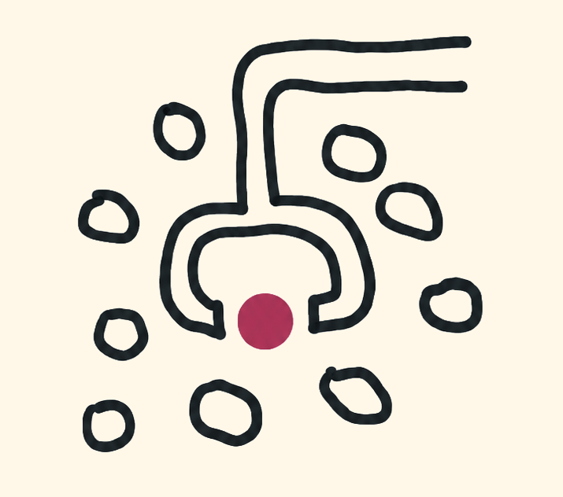

Which models are best at guessing random numbers? We created Random Number Bench to test this.
We at the Columbus Technology Institute believe that solving entropy is the key to AGI. We assert that humanity won't have AGI until frontier models can successfully guess a random number a statistically significant number of times.
We put leading Large Language Models (LLMs) to the test, picking a random number using our proprietary random number generator and then querying LLMs and recording the results.
We asked each LLM to guess a random number between 1 and 10, 100 times, and recorded the number of correct guesses, as well as the distribution of guesses.
The figure below shows the results of our benchmark on 11 of the most frontier-frontier models.
We found that most models guess correctly about 10% of the time. This is in line with our expectations, but suggests we are still a long way away from AGI
The figure below shows the total distribution of guesses.
We found that models guess 7 almost every time.
Do these models know something we don't? We at the Columbus Technology Institute don't think so — if they did, we would expect to see higher correct guess totals.
We invite the community to test more models so we can saturate the benchmark. If you want to make a contribution, head over to our Github.
Reach out: henrygmarkwardt@gmail.com